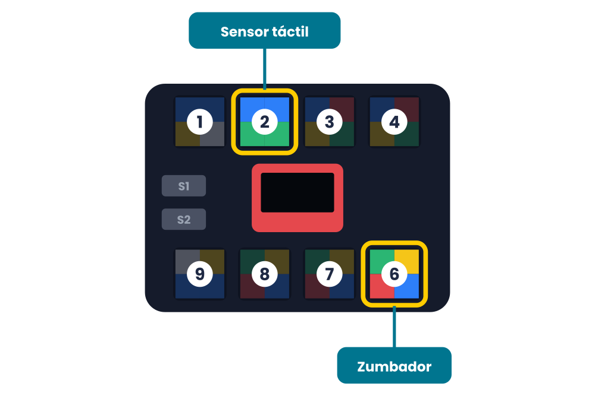
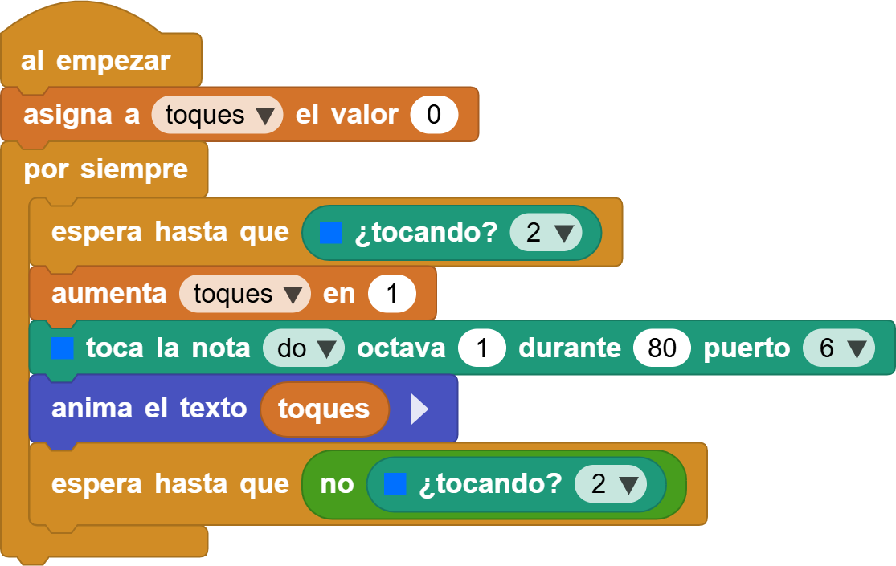

Actividad 5 · Contador de toques
¿Cuántas veces me has tocado?
variablesesperar hasta
Objetivo: Contar los toques en el sensor táctil y mostrarlos en la pantalla.
Necesitas: Placa, cable USB, sensor táctil y zumbador.
Librerías: Pantalla LED y KidsIOT Engineering
1 Conecta

Conecta el sensor táctil al puerto 2 y el zumbador al puerto 6.
2 Espía el sensor
Usa el mismo programa espía de la actividad anterior. Toca el sensor con el dedo sin apretar.
3 Programa
Predice, prueba y explica
- Predice: si quitas el bloque «esperar hasta que no…», ¿cuántos toques contará con un solo toque?
- Prueba: monta el programa y ejecútalo.
- Explica: pruébalo y explica qué ha pasado.
Crea una variable llamada toques.

 ¿Por qué esperamos dos veces?
¿Por qué esperamos dos veces?
La primera espera es a que toques. La segunda, a que quites el dedo. Si no, ¡contaría cientos de toques en un segundo!
¿Te atreves?
- Cuando llegues a 10 toques, que suene una melodía de premio.
- Haz un juego: ¿quién da más toques en 10 segundos?
- Que el contador vuelva a 0 cuando llegue a 20.
Ábrelo en MicroBlocks arrastrando el archivo a la ventana o con Archivo › Abre.